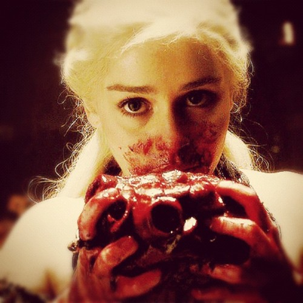

Sunday, October the 12th, 2014
back to: title, date or indexes
Sometimes I find myself fretting about things which common sense tells me are absolutely not worth fretting about. Yet still I fret. Think of it as idiotic fretting.
The latest matter to consume my stupid attention is as follows. I was struck, when watching Danish television dramas such as Borgen and The Killing, by the immense politeness of the Danes. In both shows, the characters are forever saying “Takk” (“Thank you”), certainly more so than the average Brit or American would do. I am not familiar with real life in Denmark, but I assume that the writers of these series are making every effort to reproduce the actual speech of contemporary Danes.
In Game Of Thrones, by contrast, we are told by Ser Jorah Mormont (Iain Glen) that “there is no word for ‘thank you’ in Dothraki”. Given that the Dothraki are a savage and barbaric race whose idea of a square meal is to consume a whole horse-heart, raw, the absence of an expression of gratitude is not surprising.
But what is bothering me is this : when Danish dramas are shown on Dothraki television, how in heaven's name will the subtitle-writers cope with all those “Takk”s?
It is, to be sure, a proper quandary, if an idiotic one.

The Khaleesi eating a raw horse-heart for breakfast
Hooting Yard on the Air, November the 6th, 2014 : “If You Go Away” (starts around 24:35)